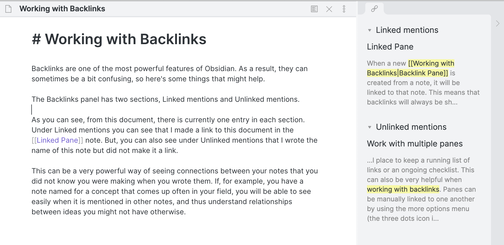

Working with backlinks
Backlinks are one of the most powerful features of Obsidian. As a result, they can sometimes be a bit confusing, so here's some things that might help.
The Backlinks panel has two sections, Linked mentions and Unlinked mentions.

As you can see, from this document, there is currently one entry in each section. Under Linked mentions you can see that I made a link to this document in the Linked pane note. But, you can also see under Unlinked mentions that I wrote the name of this note but did not make it a link.
This can be a very powerful way of seeing connections between your notes that you did not know you were making when you wrote them. If, for example, you have a note named for a concept that comes up often in your field, you will be able to see easily when it is mentioned in other notes, and thus understand relationships between ideas you might not have otherwise.
If a reference appears in the Unlinked mentions, and you want to link it, hovering over the text will bring up a Link button. Clicking this will automatically surround the highligted text in the referenced note with brackets, making it into an explicit link.
You can also create a separate, dedicated backlinks pane for a note under the More Options menu. This will be a Linked pane connected to the note, and can be moved around anywhere, as described in Work with multiple panes. There's also an option to do this in the Command palette.